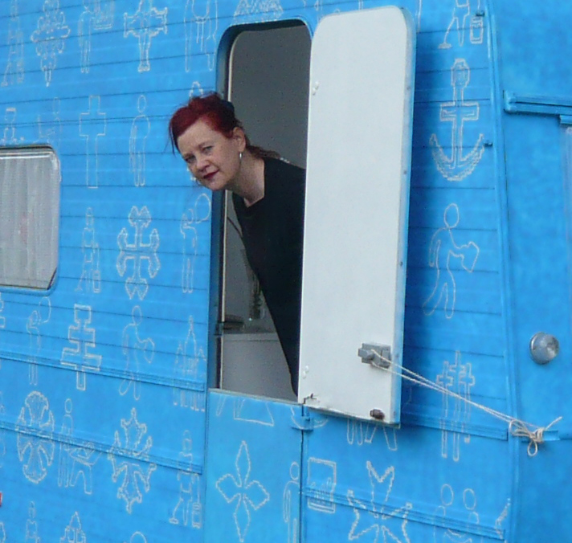
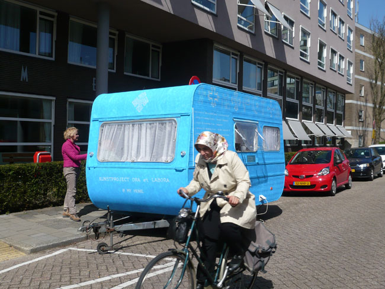
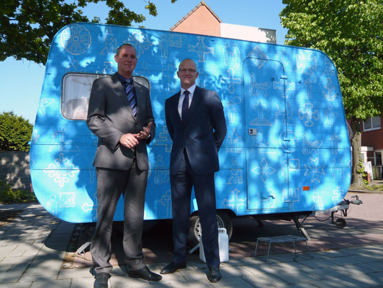
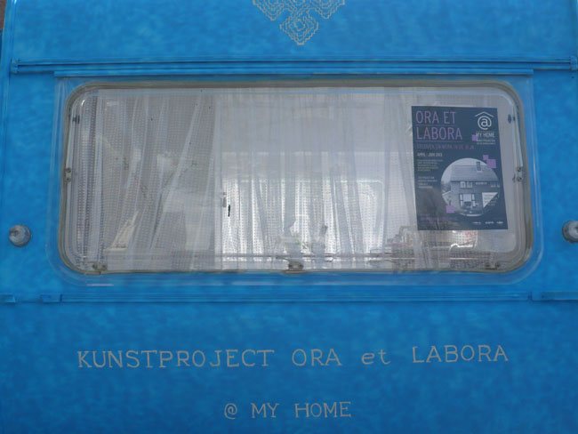
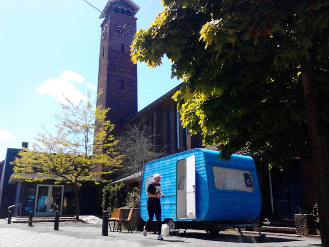
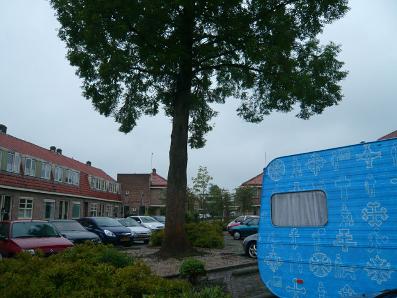
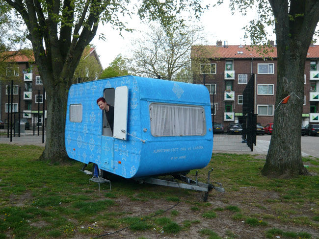
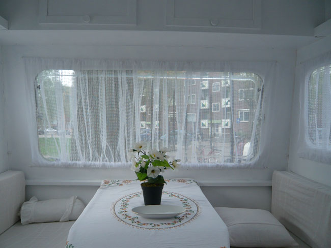
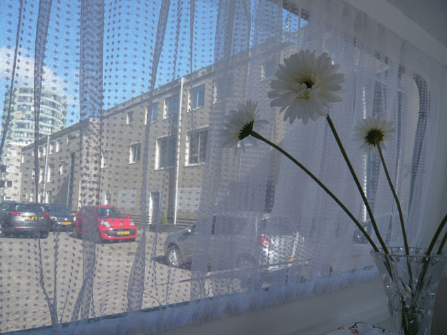

Ora et Labora
Een reis met een felblauw geschilderde caravan door de Rosmolenwijk in Zaandam in 2013. In de caravan vonden gesprekken plaats over werk al dan niet in relatie tot religie. In de etalage van My Home; een oude leegstaande meubelzaak waar projecten te zien zijn en concepten bedacht worden in opdracht van Marc Volger en Patricia van der Lugt, was een twee-dimensionale caravan te zien waarin het raam een tv gemonteerd was waar de films/interviews te zien en horen waren die gedurende het project waren gemaakt.

De reis door de Rosmolenwijk.
  
  
  
Een aantal gesprekken in de caravan op film.
Voor meer films en informatie kijk daarvoor op onderstaande website.